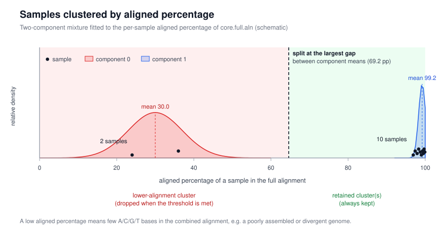
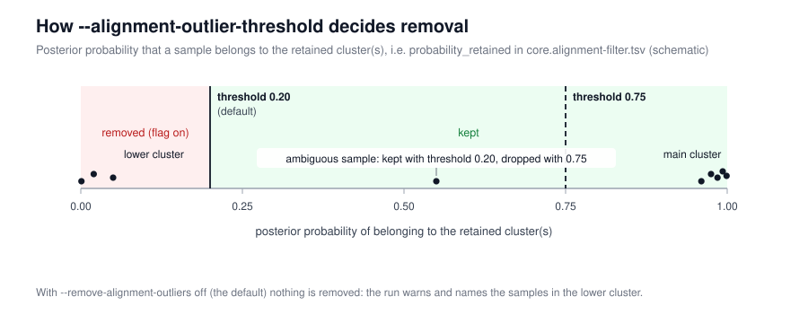

snippy-ng core
Turn finished Snippy-NG runs into a core alignment: one concatenated alignment of every sample against a shared reference, filtered down to the sites that are present in enough samples to be worth analysing, plus pairwise SNP distances.
Use it when the per-sample work is already done — for example on the samples/
directory of a snippy-ng multi run — and you want to choose the
core threshold yourself, or re-run the alignment with different settings.
Quick start
Each SNIPPY_DIRS argument is a Snippy-NG run directory containing the sample's
pseudo-genome (*.fna) and its QC table (*.qc.tsv). --ref is the reference
FASTA — or a prepared reference directory, as produced by snippy-ng utils ref
or by a previous run — used to define contig order. Unlike multi, core takes
a local reference path, not an accession.
Worked example
Reusing the phiX174 run from Multi-sample analysis:
That finishes in a few seconds and produces an 8-sequence alignment (reference + 7 samples) of 43088 sites, which the soft-core filter reduces to 576 sites:
| Output | Result for this example |
|---|---|
core.full.aln |
8 sequences, 43088 sites (every position in the reference) |
core.095.aln |
8 sequences, 576 variable sites present in ≥95% of samples |
core.095.fconst |
1273,1139,1233,1662 constant sites, for IQ-TREE -fconst |
core.095.distance.tsv |
pairwise SNP distances, e.g. phiX174-SCSC2 vs reference = 25 |
Continue straight to a tree:
How it works
flowchart TD
S["Snippy-NG run directories (*.fna + *.qc.tsv)"] --> R[Load or prepare the reference]
R --> C["Combine pseudo-genomes into core.full.aln (reference first)"]
C --> D1["Pairwise SNP distances: core.full.distance.tsv"]
C --> A["Per-sample aligned percentage: core.aligned.tsv"]
A --> F{Alignment outlier check}
F -->|flag off, default| K["core.filtered.aln: every sample kept"]
F -->|--remove-alignment-outliers| X["core.filtered.aln: outliers dropped"]
K --> SF["coresnpfilter -e -c CORE: core.095.aln + core.095.fconst"]
X --> SF
SF --> D2["Pairwise SNP distances: core.095.distance.tsv"]
The reference is written as the first sequence of the alignment, each sample
contributes one concatenated supercontig per reference contig, and --mask (a
BED file in reference coordinates) turns the masked regions into N in every
sequence, including the reference.
Strict core vs soft core
A site is core if an unambiguous base (A, C, G or T) is present there
in at least the fraction of sequences given by --core. Gaps, N and any other
character are treated the same way: as missing data. The comparison is ≥, so
with --core 0.8 a site with 4 of 5 unambiguous bases still counts as core.
Invariant sites are always removed, so the core alignment contains only variable
sites.
--core 1.0 gives a strict core: only sites with data in every sample.
The default --core 0.95 gives a soft core, which tolerates a little missing
data at each site and therefore keeps many more sites as datasets grow. The
trade-off is documented in Taouk et al., Exploring SNP filtering strategies: the
influence of strict vs soft core (Microbial Genomics 2025;11(1):001346,
doi:10.1099/mgen.0.001346):
- A strict core shrinks markedly as sample size and genome diversity increase, discarding potentially informative data; in a 10 000-genome Salmonella enterica serovar Typhi alignment a 95% soft core yielded ten times more informative sites than a 100% strict core, with similar patterns in Neisseria gonorrhoeae.
- Trees built from soft-core alignments generally showed better clock-like behaviour: the N. gonorrhoeae 95% soft-core phylogeny had a root-to-tip regression R² of 0.50 versus 0.21 for the strict-core phylogeny.
- The paper's conclusion is that soft-core strategies are preferable for large,
diverse datasets — which is why
--core 0.95is the default here.
The filtering is done by Core-SNP-filter
(coresnpfilter --core CORE --exclude_invariant), the tool released with that
paper. Its README has an
illustrated example
that colours the sites removed at different thresholds; the key points are that
non-A/C/G/T characters are all treated as missing, that the core fraction
test is inclusive, and that a site can be both invariant and non-core — invariant
sites are filtered first.
The counts in core.095.fconst (invariant A,C,G,T counts) exist so that a tree
built from a variable-sites-only alignment can correct for the sites that were
removed, for example iqtree -fconst 1273,1139,1233,1662.
Alignment outliers
The core alignment is only meaningful if the samples in it are comparable, so
before filtering, core looks at the aligned percentage of each sample in
core.full.aln: the fraction of its sites that are A/C/G/T rather than
gaps or ambiguity codes. A sample with a low value (a poorly assembled genome, a
contaminant, or a very divergent genome) adds gaps to every site it touches and
can pull the whole alignment down.

Samples are grouped by fitting a one- to three-component Gaussian mixture to those percentages. Components are ordered by their means, the largest gap between adjacent means is the split, and everything above the split is "retained". The lower-alignment component(s) are the candidates for removal.

Each sample's probability_retained — its posterior probability of belonging to
the retained component(s) — is compared with --alignment-outlier-threshold
(default 0.20). Samples below the threshold are dropped. Because clusters are
usually well separated, posteriors are near 0.0 or 1.0 and the exact
threshold rarely changes the outcome; it matters for samples that fall between
clusters.
Removal is off by default. With the flag off, nothing is removed and the run warns instead, naming the samples in the lower cluster:
Alignment core.full.aln splits into 2 clusters (largest gap 80.0 percentage points);
kept the lower-alignment cluster(s): s11, s12. Rerun with --remove-alignment-outliers
(threshold 0.20) to drop them, or inspect core.alignment-filter.tsv
To drop them:
Small cohorts (fewer than 10 samples) are too small to fit a mixture model, so a
robust one-sided MAD rule is used instead: samples far below the median aligned
percentage are outliers, and --alignment-outlier-threshold is not used. The
same warning/flag behaviour applies.
Every per-sample decision is recorded in core.alignment-filter.tsv
(aligned, assigned_component, probability_retained, removed,
filter_reason), and the run also checks whether the mixture components simply
track the input type (pipeline_type from each sample's *.qc.tsv) in
core.alignment-cluster-technical-check.tsv — a strong association means the
clusters are technical, not biological.
Options
| Option | Default | Purpose |
|---|---|---|
SNIPPY_DIRS... |
– | One or more Snippy-NG run directories (*.fna plus *.qc.tsv) |
--reference, --ref |
required | Reference FASTA or prepared reference directory, used for contig order |
--core |
0.95 |
Fraction of samples that must have an unambiguous base at a site for it to stay in the core alignment |
--remove-alignment-outliers |
disabled | Drop detected low-alignment outlier samples before core filtering |
--alignment-outlier-threshold |
0.20 |
Posterior probability of belonging to the retained clusters; only used with --remove-alignment-outliers and cohorts large enough for mixture modelling |
--snp-distance-format |
tabular |
Format of the pairwise SNP distance matrix: tabular or phylip |
--mask |
none | BED file (reference coordinates) of regions to mask with N in every sequence |
Global options (-o/--outdir, -p/--prefix, -c/--cpus, -r/--ram, --force,
--skip-check, --create-missing, --no-cleanup, --quiet, --debug, ...)
are shared with the other commands. Run snippy-ng core -h for the full list.
Outputs
With -o core-phix and the default -p core:
core-phix/
├── core.full.aln all samples, every reference position
├── core.full.distance.tsv pairwise SNP distances (full alignment)
├── core.aligned.tsv per-sample aligned percentage
├── core.filtered.aln alignment after the outlier check
├── core.alignment-filter.tsv per-sample outlier decisions and mixture diagnostics
├── core.alignment-cluster-technical-check.tsv do components track pipeline_type?
├── core.095.aln soft core alignment (suffix follows --core)
├── core.095.fconst invariant site counts for IQ-TREE -fconst
└── core.095.distance.tsv pairwise SNP distances (core alignment)
--core 1.0 writes core.100.aln; the same rule applies to the .fconst and
.distance.tsv files. Every pipeline directory also gets LOG.txt,
FILES.tsv, CITATIONS.txt and PIPELINE.txt.
See also
- Multi-sample analysis: the
multicommand that produces the input directories - Tree report: render the tree built from the core alignment
- Reference preparation: prepare a reference directory with
snippy-ng utils ref